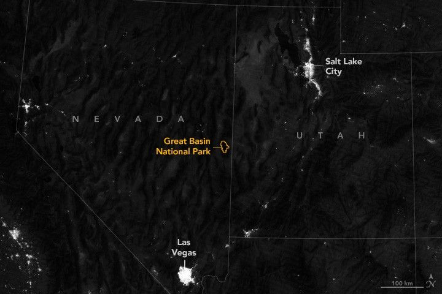

Dark Skies Over the Great Basin
Off eastern Nevada’s U.S. Route 50, the “loneliest road in America,” the rugged and remote wilderness of Great Basin National Park awaits. Among its notable features, the park contains the 13,063-foot (3,982-meter) summit of Wheeler Peak, as well as Nevada’s last remaining glacier, a large collection of caves, and groves of Great Basin bristlecone pines (Pinus longaeva)—trees that can live upwards of 5,000 years.
Another remarkable aspect of the park can be experienced by looking up. One of the darkest places in the United States, the area is ideal for observing the night sky. The national park is located within the Great Basin, from which it draws its name, a large region with parallel, washboard-like ridges and valleys where water drains inland rather than to an ocean. Both Salt Lake City, Utah, and Las Vegas, Nevada, are roughly 200 miles (320 kilometers) away.
The image above offers a sense of the dark, remote nature of the park. It was acquired at about 3:15 a.m. Pacific Daylight Time (10:15 Universal Time) on August 12, 2025, by the VIIRS (Visible Infrared Imaging Radiometer Suite) on the Suomi NPP satellite and was overlaid on a digital elevation model to give a sense of the topography. The image comes from the VIIRS “day-night band,” which detects light in a range of wavelengths and uses filtering techniques to observe signals such as auroras, city lights, and reflected moonlight. Notice how naturally bright desert areas stand out in the image, in addition to anthropogenic light sources.
The daytime image below, acquired with the OLI-2 (Operational Land Imager-2) on Landsat 9 on August 12, shows the terrain of Great Basin National Park in detail. Desert landscapes give way to sagebrush-covered foothills and the mountains of the Snake Range.
A satellite image shows Great Basin National Park in the daytime. The right and left thirds of the image show a tan-colored desert landscape containing some round, green agricultural fields. The middle part, which contains the park, is mountainous.
Along with its distance from significant light pollution, the park’s climate and topography contribute to clear, dark skies overhead. Because of its high elevation, less atmosphere and air pollution obscure the view of distant objects. And a dry, cool climate means the air is less humid, which can also affect visibility.
Great Basin National Park takes advantage of its dark-sky assets to offer regular ranger-led astronomy programs and to host an annual astronomy festival in mid-September. It earned the designation of International Dark Sky Park in 2016 due to its dark-sky resources and preservation efforts.
“Every time I think of Great Basin National Park and its dark skies, I get a chill,” said Jerry Hilburn, a NASA Solar System Ambassador and a guest speaker at the 2025 festival. “You can stand out there on a night when there’s no Milky Way or no Moon, and you can’t see 10 feet in front of you. It really is a pristine environment.”
Hilburn is also the director of the Great Basin Observatory (GBO), a project of the Great Basin National Park Foundation and the only research-grade observatory located within a national park. At 6,825 feet (2,080 meters) in elevation, the observatory operates a 27.5-inch reflecting telescope, a spectrograph, and imaging equipment.
A ground-based photo taken at nighttime shows a dome-shaped astronomical observatory in the foreground with the silhouette of mountainous terrain in the background. The night sky shows an abundance of stars, the streak of a meteor, and the band of light from the Milky Way.
Some of the work at the GBO has focused on observations of binary stars and exoplanets, and users regularly submit quality results to journals and databases. The facility operates remotely, and in keeping with its educational mission, Hilburn guides students from around the world in setting up the telescope and analyzing observations.
NASA resources and discoveries are vital to work conducted at GBO by helping direct researchers where to look, Hilburn noted. He and his students regularly utilize data from the Kepler and Transiting Exoplanet Survey Satellite (TESS) missions and from NASA’s Planetary Data System.
Conversely, observations made by smaller telescopes such as GBO’s also benefit NASA science. In one case, scientists working with the James Webb Space Telescope used data from a network of small telescopes to more accurately predict the transit of an exoplanet. As a result, they made more efficient use of the space telescope, reducing the necessary observation time from tens of minutes to a few minutes.
Preserving the dark remains vital to these science and educational activities and to the mission of Great Basin National Park. One way to inspire efforts to minimize light pollution is simply providing opportunities for people to witness the night sky. To show the value of the increasingly rare resource, Hilburn said, “you get people to come out and experience a dark night at the park.”